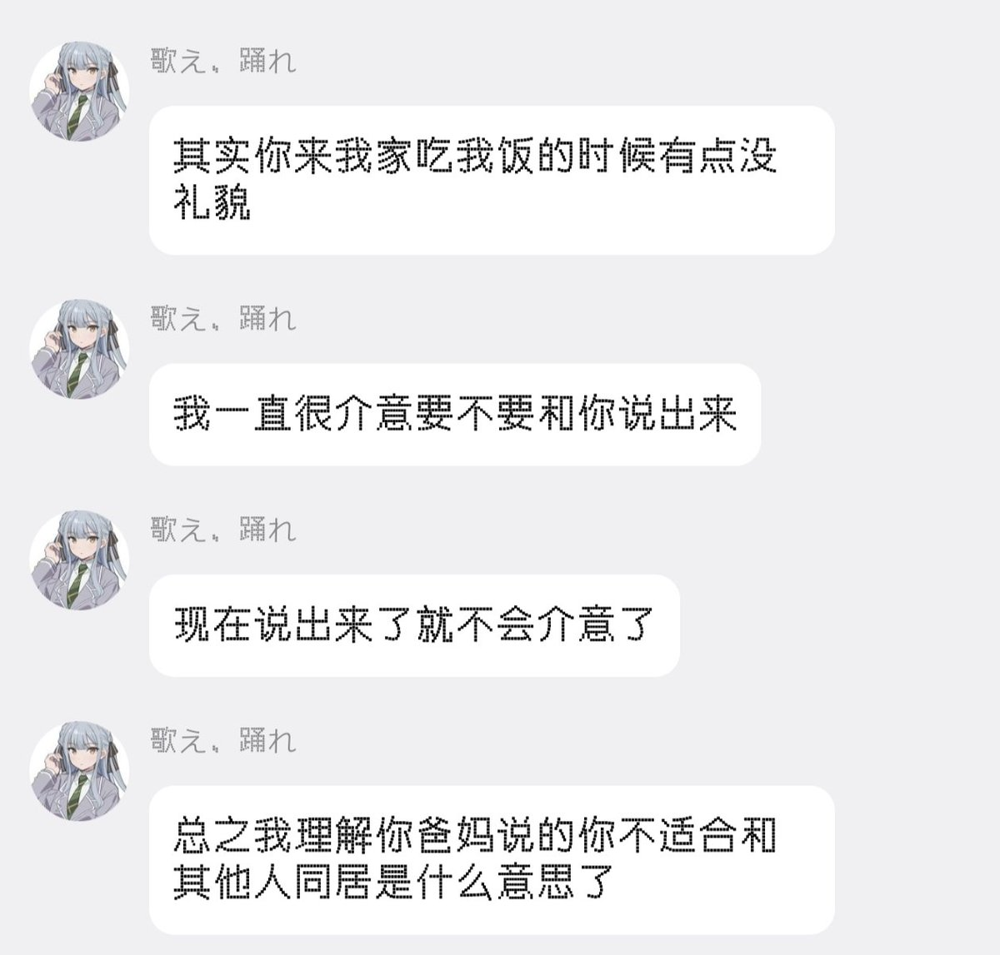

ダレデスカユウレイ？
@mi0myl0ve
这段聊天记录我甚至可以完整发出来。她现在说我骂她没家教不会做人。而我的原话是

ダレデスカユウレイ？
@mi0myl0ve
可是你们不觉得去别人家里，别人的家长就坐在客厅，而客人只是看了人一眼就径直走进房间，很没礼貌吗？这种事情不仅仅对我妈发生，对我爸也发生。而我当时没有当面和她说任何！是在她走了之后，我妈跟我说你朋友没礼貌不和大人打招呼。我就去提醒她，结果她质问我说“你觉得我不懂礼貌？” https://t.co/lVIQ5P3vjv